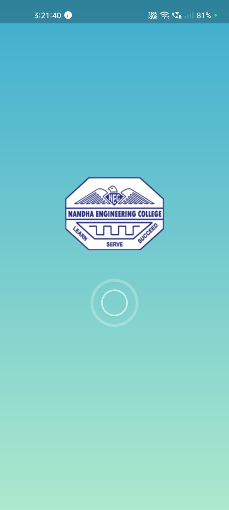
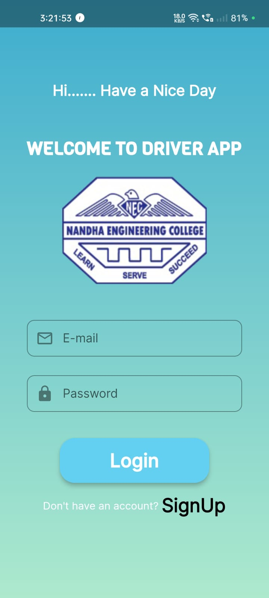
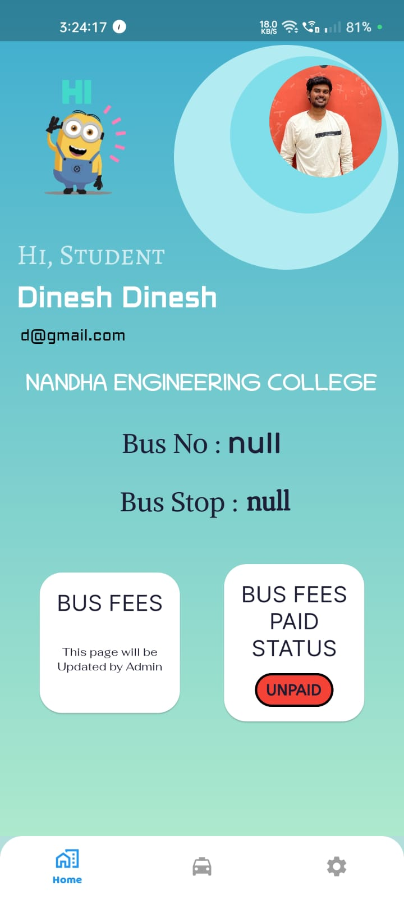

Smart Travellers App
An accessible travel guidance system for public transport networks, focused on simplifying route use and improving rider confidence.
Role
Research & Development
Platform
Flutter, Dart, Web
Outcome
Published paper and tested simulation experience.
Overview
This project explores public transportation navigation, mobile guidance, and travel planning to reduce congestion and improve sustainability.
- Improved traveler satisfaction by providing on-trip navigation information.
- Designed a modular, cost-efficient user-friendly system for transport networks.
- Supported route discovery and environmental benefits through better transit use.
Simulation Screens
The app opens with a welcoming navigation dashboard for travelers.

Drivers can log in to manage routes, students, and live tracking.

Students receive travel updates, live bus location and route details.
